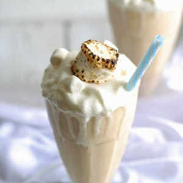

Toasted Marshmallow Milkshake

Ingredients
- 2 cups vanilla ice cream
- 1/4 cup milk
- 9 large marshmallows
- Caramel ice cream topping
- Marshmallow Flugg
Directions
- Set oven to broil.
- Cut large marshmallows in half. Set aside while you combine milk and ice cream in blender. Blend until creamy.
- Immediately place marshmallows under broiler for 20-30 seconds until browned. Remove and immediately place into blender. Pulse the marshmallows until they are mixed with the ice cream.
- Pour mixture into glasses and top with whipped cream.